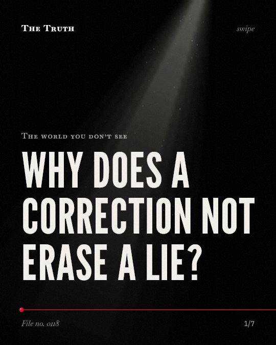

The world you don’t see
Why does a correction not erase a lie?

Corrections do not entirely eliminate the effect of misinformation.
Even after a debunking message is received, the initial impact of false information remains in the mind.
Supported. At least one solid peer-reviewed study. The evidence backs this.
What the research found
A detailed debunking message is linked to both a debunking effect and a misinformation-persistence effect.
“Surprisingly, however, a detailed debunking message also correlated positively with the misinformation-persistence effect.”
Meta-analysis, 2017. Chan et al., Psychological science.
Corrections that exposed participants to novel misinformation did not lead to stronger misconceptions compared to a control group never exposed to the false claims or corrections.
“Corrections that exposed participants to novel misinformation did not lead to stronger misconceptions compared to a control group never exposed to the false claims or corrections.”
Experiment, 2020. Ecker et al., Cognitive Research Principles and Implications.
Implied misinformation is more resistant to correction than explicit misinformation, even when the correction is paired with an alternative explanation.
“Experiment 2 showed that implied misinformation was more resistant to correction than explicit misinformation, even when the correction was paired with an alternative explanation.”
Experiment, 2015. Rich & Zaragoza, Journal of Experimental Psychology Learning Memory and Cognition.
Continued influence remains for negative misinformation, but it reverses for corrected positive information, causing people to have more negative attitudes towards the hospital than before.
“But whereas some persuasive impact remained for corrected negative misinformation (a continued influence effect), it reversed for corrected positive information, causing people to have more negative attitudes towards the hospital than before exposure to any information (a backfire effect).”
Experiment, 2021. Huijstee et al., International Journal of Psychology.
Correction does not entirely eliminate the effect of misinformation (r = –.05, p = .045).
“Aggregation of results from 32 studies ( N = 6,527) revealed that, on average, correction does not entirely eliminate the effect of misinformation ( r = –.05, p = .045).”
Meta-analysis, 2019. Walter & Tukachinsky, Communication Research.
Corrections are less effective if the misinformation was attributed to a credible source, repeated multiple times, or if there was a time lag.
“Corrections are less effective if the misinformation was attributed to a credible source, the misinformation has been repeated multiple times prior to correction, or when there was a time lag between the delivery of the misinformation and the correction.”
Meta-analysis, 2019. Walter & Tukachinsky, Communication Research.
The type of lie changes how it sticks.
Implied misinformation is more resistant to correction than explicit claims. Negative misinformation can also persist, sometimes causing more negative attitudes toward a subject after a correction is provided.
The correction is not a reset button.
That may be why you still feel a lingering sense of doubt or distrust even after seeing a fact-check. The first impression leaves a mark that a simple correction cannot fully erase.
This part is our reading of the evidence, not a finding.
The news feed at dinner.
You read a headline about a hospital. You see a correction later that evening. You still feel a sense of unease when you think about the building the next day.
The honest summary
The evidence confirms that misinformation persists after correction, though the strength of this persistence depends on the type of misinformation and the delivery of the correction.
The effectiveness of corrections is highly dependent on specific variables like the source of the information, the time lag, and whether the misinformation was explicit or implied.
What lies do you still believe after you see the truth?
Sources
- Chan MS, Jones CR, Hall Jamieson K, Albarracín D (2017). Debunking: A Meta-Analysis of the Psychological Efficacy of Messages Countering Misinformation. Psychological science. Meta-analysis, cited 892 times.
- Nathan Walter, Riva H. Tukachinsky (2019). A Meta-Analytic Examination of the Continued Influence of Misinformation in the Face of Correction: How Powerful Is It, Why Does It Happen, and How to Stop It?. Communication Research. Meta-analysis, cited 516 times.
- Patrick R. Rich, Maria S. Zaragoza (2015). The continued influence of implied and explicitly stated misinformation in news reports.. Journal of Experimental Psychology Learning Memory and Cognition. Experiment, cited 145 times.
- Ullrich K. H. Ecker, Stephan Lewandowsky, Matthew Chadwick (2020). Can corrections spread misinformation to new audiences? Testing for the elusive familiarity backfire effect. Cognitive Research Principles and Implications. Experiment, cited 114 times.
- Dian van Huijstee, Ivar Vermeulen, Peter Kerkhof et al. (2021). Continued influence of misinformation in times of COVID ‐19. International Journal of Psychology. Experiment, cited 33 times.
Also read for this file, not quoted
- Aguinis et al. (2010). Debunking Myths and Urban Legends About Meta-Analysis.
This file was researched and drafted by software, then checked by rules a model cannot talk its way around: each quote above was matched word for word against the paper, and every number had to appear in it. How files are made.